Project 5: Fun with Diffusion Models

Part A: 0 - Setup
After setting up my Deepfloyd, I used the seed = 42 for all my image generations. Looking at the prompts,
we can see that the quality of the prompt generated images improves with a higher n value. This is
can be seen in the greater details for the higher n value images. However, critically, looking at one of my
prompts, "A candle with a purple flame", we can see that the candle's flame is not purple for either n value.
This could be due to the model not being trained well enough to capture such specific details. When I compared
this to the current state of the art model Nano Banana Pro by Google, I was able to get a great purple flamed
candle with the same prompt.
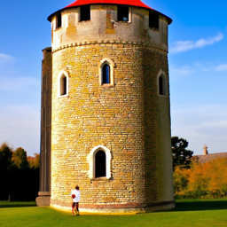
Prompt: A medieval tower (n=20)
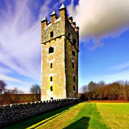
Prompt: A medieval tower (n=50)
Prompt: A photo of a volcano (n=20)
Prompt: A photo of a volcano (n=50)
Prompt: A candle with a purple flame (n=20)
Prompt: A candle with a purple flame (n=50)
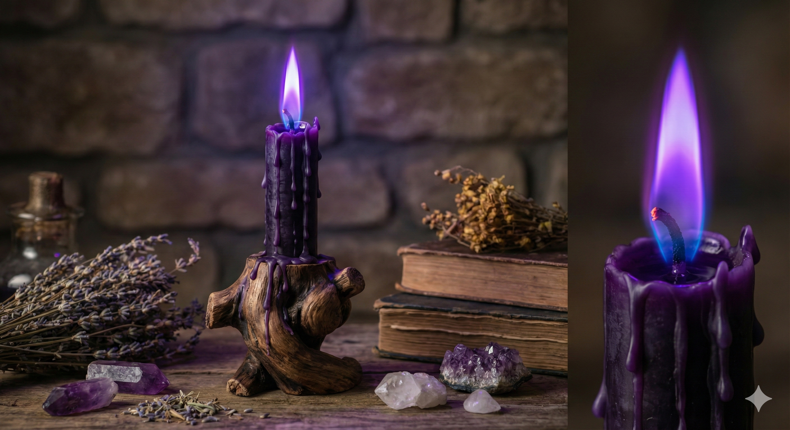
Prompt: A candle with a purple flame (Prompted from Nano Banana Pro as reference)
Part A: 1.1 Implementing the Forward Process
I simply implemented the forward noising function, using torch.randn for epsilon and following the formula.

Campanile (Unedited)
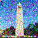
Campanile (t=250)
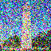
Campanile (t=500)
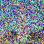
Campanile (t=750)
Part A: 1.2 - Classical Denoising
Below are the results from running the noised images through the Gaussian blur filter.
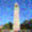
Gaussian Blur Denoising t=250
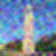
Gaussian Blur Denoising t=500
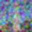
Gaussian Blur Denoising t=750
Part A: 1.3 - One-Step Denoising
Following the formula from before, I changed the subject of the equation to solve for the original image.
Then using the noise estimate, we compute the denoised image in a single step.
One-Step Denoising t=250
One-Step Denoising t=500
One-Step Denoising t=750
Part A: 1.4 - Iterative Denoising
Here, we use the strided timesteps in order to iteratively denoise the image. Starting from the noised image,
we denoise it multiple times, getting a new noise estimate each time until we reach t=0. As requested, I
started from i_start = 10, corresponding to t=690. I've also attached the one-step denoised and gaussian
blur denoised images from t=690 for comparison. As can be seen, the iterative denoising produces a result
with much more details than the other 2 methods.
Noisy Campanile at t=90
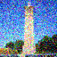
One-Step Denoising t=240
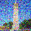
One-Step Denoising t=390
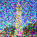
One-Step Denoising t=540
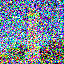
Noisy Campanile at t=690
Iteratively Denoised Campanile
One-Step Denoised Campanile
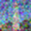
Gaussian Blur Denoised Campanile
Part A: 1.5 - Diffusion Model Sampling
Here are 5 samples generated from the diffusion model.
Generated Sample 1
Generated Sample 2
Generated Sample 3
Generated Sample 4
Generated Sample 5
Part A: 1.6 - Classifier-Free Guidance (CFG)
Following the formula, I implemented the classifier-free guidance similar to before, with the difference
being the addition of the unconditional noise estimate. Shown are 5 samples with CFG scale of 7.0. As can
be seen by the samples, the CFG samples are much more coherent than the non-CFG ones.
CFG Generated Sample 1
CFG Generated Sample 2
CFG Generated Sample 3
CFG Generated Sample 4
CFG Generated Sample 5
Part A: 1.7 - Image to image Translation
For this part, I simply used the CFG function with different i_start levels. Below are the results for
the campanile and 2 of my own images. As we get closer and closer to starting with the original image
(higher i_start number), the result becomes closer to the original.
Campanile (i_start = 1)
Campanile (i_start = 3)
Campanile (i_start = 5)
Campanile (i_start = 7)
Campanile (i_start = 10)
Campanile (i_start = 20)

Campanile (Original)
Test Image 1 (i_start = 1)
Test Image 1 (i_start = 3)
Test Image 1 (i_start = 5)
Test Image 1 (i_start = 7)
Test Image 1 (i_start = 10)
Test Image 1 (i_start = 20)
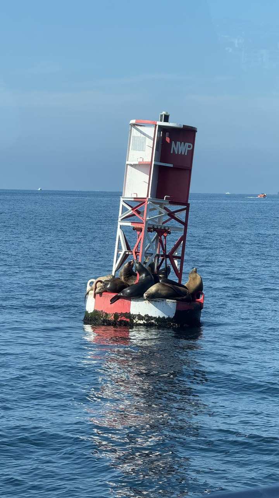
Test Image 1 (Original)
Test Image 2 (i_start = 1)
Test Image 2 (i_start = 3)
Test Image 2 (i_start = 5)
Test Image 2 (i_start = 7)
Test Image 2 (i_start = 10)
Test Image 2 (i_start = 20)
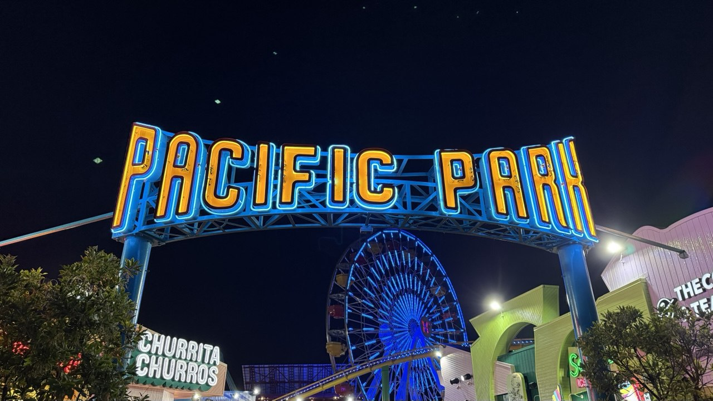
Test Image 2 (Original)
Part A: 1.7.1 - Editing Hand-Drawn and Web Image
I just did the above but with 1 web image and 2 hand-drawn images. (Drawn Image 2 is actually a
landscape drawing but it got squished after the drawing processing code)
Web Image (i_start = 1)
Web Image (i_start = 3)
Web Image (i_start = 5)
Web Image (i_start = 7)
Web Image (i_start = 10)
Web Image (i_start = 20)
Web Image (Original)
Drawn Image 1 (i_start = 1)
Drawn Image 1 (i_start = 3)
Drawn Image 1 (i_start = 5)
Drawn Image 1 (i_start = 7)
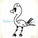
Drawn Image 1 (i_start = 10)
Drawn Image 1 (i_start = 20)
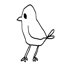
Drawn Image 1 (Original)
Drawn Image 2 (i_start = 1)
Drawn Image 2 (i_start = 3)
Drawn Image 2 (i_start = 5)
Drawn Image 2 (i_start = 7)
Drawn Image 2 (i_start = 10)
Drawn Image 2 (i_start = 20)
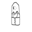
Drawn Image 2 (Original)
Part A: 1.7.2 - Inpainting
I implemented Inpainting by masking out the area I wanted and replacing it with pure noise. For the rest
of the image, the model is fed a noisy image corresponding to the noise level.
Campanile (Original Image)
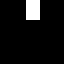
Campanile (Mask Used)
Campanile (Portion Replaced)
Campanile (Inpainted Result)
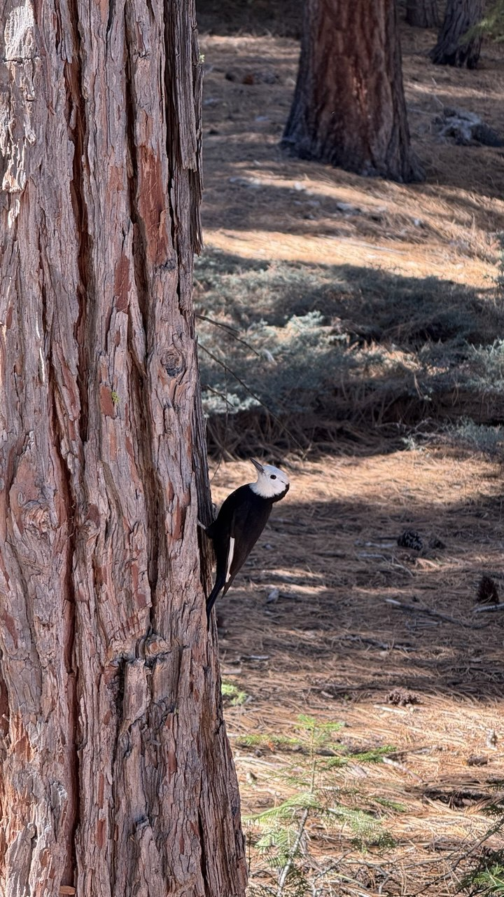
Sample Image 1 (Original Image)
Sample Image 1 (Mask Used)
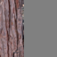
Sample Image 1 (Portion Replaced)
Sample Image 1 (Inpainted Result)
Sample Image 2 (Original Image)
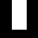
Sample Image 2 (Mask Used)
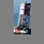
Sample Image 2 (Portion Replaced)
Sample Image 2 (Inpainted Result)
Part A: 1.7.3 - Text Conditional Image to Image Translation
I ran CFG on the image with a specified prompt.
Image: Campanile, Prompt: A sand castle
Campanile (t=1)
Campanile (t=3)
Campanile (t=5)
Campanile (t=7)
Campanile (t=10)
Campanile (t=20)
Campanile (Original)
Image: Sample 1, Prompt: A pink cactus
Sample 1 (t=1)
Sample 1 (t=3)
Sample 1 (t=5)
Sample 1 (t=7)
Sample 1 (t=10)
Sample 1 (t=20)
Sample 1 (Original)
Image: Sample 2, Prompt: A lighthouse
Sample 2 (t=1)
Sample 2 (t=3)
Sample 2 (t=5)
Sample 2 (t=7)
Sample 2 (t=10)
Sample 2 (t=20)
Sample 2 (Original)
Part A: 1.8 - Visual Anagrams
I implemented the visual anagram function by following the instructions. Starting with pure noise, we
get the noise estimate for the first prompt. Then, we flip the noisy image and estimate the noise for the
second prompt. We then flip the second noise estimate, add them together and use the average.
Anagram 1 (Desk Lamp)
Anagram 1 (Mushroom)
Anagram 2 (Volcano)
Anagram 2 (Pizza Slice)
Part A: 1.9 - Hybrid Images
To implement the hybrid image function, we first get the CFG noise estimate for the 2 different prompts.
We then get the low-pass and high-pass (by subtracting low pass from original) of the respective
noise estimates, before summing them together.
Hybrid 1 (Earth and Charcuterie Board)
Hybrid 2 (Pencil and Medieval Tower)
Part B: 1.2 - Using the UNet to train a denoiser
The noising function just follows the formula, adding random noise to the image based on the sigma scale.

Sigma = 0.0
Sigma = 0.2
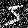
Sigma = 0.4
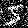
Sigma = 0.5
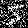
Sigma = 0.6
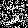
Sigma = 0.8
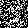
Sigma = 1.0
Part B: 1.2.1 - Training
Following the UNet architecture given in the diagram, I implemented the respective blocks and combined them
into the UNet. Below are the results after training on the 1st and 5th epoch. The noise level sigma=0.5 was
used for the samples. They are in the order (input,noisy,denoised). As shown, the results are much clearer
after training for 5 epochs as compared to 1. These are the hyperparameters I used for training:
- Batch Size: 256
- Learning Rate: 1e-4
- Optimizer: Adam
- Hidden Dimensions: 128
- Number of Epochs: 5
- Noise Level: 0.5
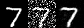
Sample 1 (Epoch 1)
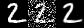
Sample 2 (Epoch 5)
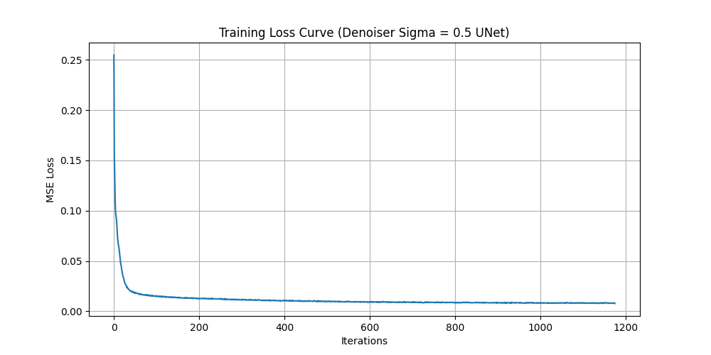
Training Loss Curve (UNet Denoiser)
Part B: 1.2.2 - Out of Distribution Testing
I sampled from the model using test images of different noise levels, different from the training set.
As can be seen, the results start becoming much worse when using noise levels higher than 0.5 which
the model was trained on.
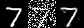
Sample (Sigma=0.8)
Part B: 1.2.3 - Denoising Pure Noise
For the explanation of the results with pure noise input, it can be explained by the loss function
used during training. Since the model is trained to minimize the L2 loss, when given pure noise as input,
the model will need to predict
the resulting number in the image. Since the input is pure noise, the model will likely predict
an average of all possible results. This causes a final output where the image is a blurry combination
of all 10 digits in the training set.
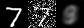
Sample 1 (Epoch 1)
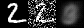
Sample 2 (Epoch 5)
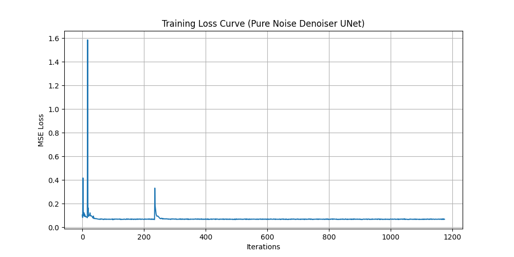
Training Loss Curve (UNet Denoiser with Pure Noise)
Part B: 2.1 - Time-Conditioned UNet
Here I followed the instructions to add the time-conditioning block at the concatenation
points during the upsampling path of the UNet. A scheduler was also use to adjust the learning rate
after each epoch. By epoch 10, we can see the results are reasonably good, with some results being
fully legible numbers.
These are the hyperparameters I used for training:
- Batch Size: 64
- Learning Rate: 1e-2
- Optimizer: Adam
- Hidden Dimensions: 64
- Number of Epochs: 10
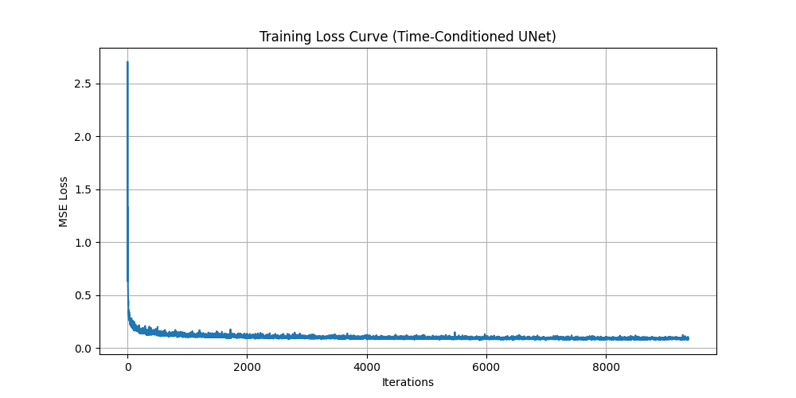
Training Loss Curve (Time-Conditioned UNet)
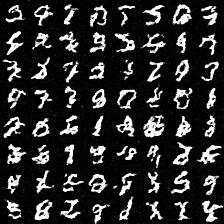
Sample (Epoch 1)
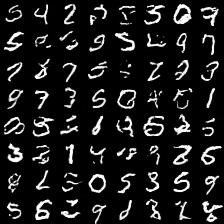
Sample (Epoch 5)
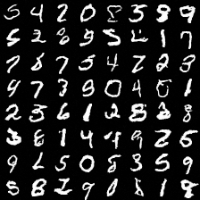
Sample (Epoch 10)
Part B: 2.4 - Class-Conditioned UNet
Finally, we have the Class-Conditioned UNet. Adding the class conditioning block at the same place as
the time-conditioning blocks. We also introduced periodic dropout to the model to help with generalization,
using puncond=0.1, meaning a 10% chance of dropping the class conditioning. Here, I also removed the
scheduler from before, and to account for this, I decreased the learning rate to 1e-4.
These are the hyperparameters I used for training:
- Batch Size: 64
- Learning Rate: 1e-4
- Optimizer: Adam
- Hidden Dimensions: 64
- Number of Epochs: 10
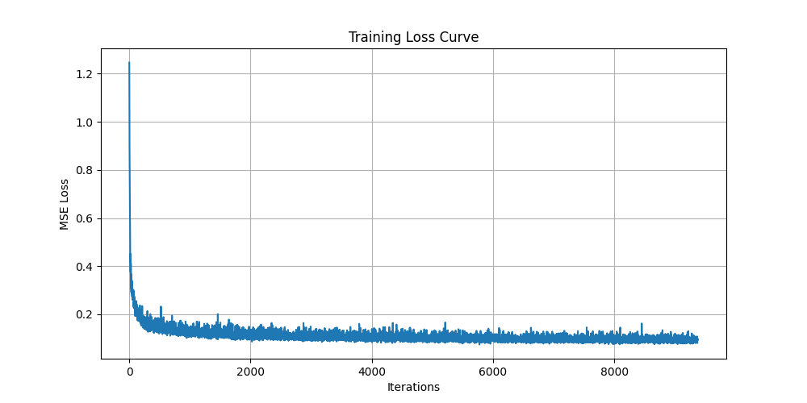
Training Loss Curve (Class-Conditioned UNet)
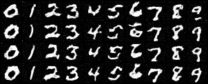
Sample (Epoch 1)
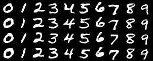
Sample (Epoch 5)
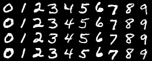
Sample (Epoch 10)